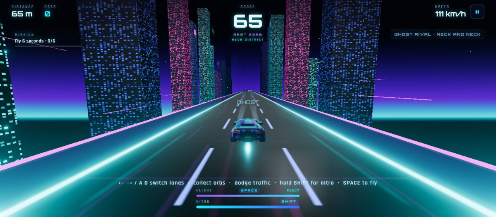

- Engineered a 500+ API orchestration layer for AI workflows: endpoints, routing, API discovery and integrations.
- Built GPU-accelerated computer-vision pipelines with Qwen on 2× Tesla V100 32GB GPUs for image recognition and ad verification.
- Developed 3D and robotics simulation workflows with Unity (C#), ROS, Gazebo and NVIDIA Isaac Sim.
Open to backend & AI roles · R&D apprentice at Rootstock Technology · Delhi
AnjaneyaTiwari
I build software that works beyond the demo.
Selected work ↓GitHub ↗LinkedIn ↗Email ↗
Backend, AI and full-stack engineer in Delhi. I build async APIs, agentic pipelines and voice-AI infrastructure, and I built and deployed a multiplayer 3D game.
The parts demos skip · numbers from my work, each linked to its context
- 500+APIs behind one orchestration layer: routing, discovery, integrations.
- 1,000+concurrent voice requests, under 2 seconds end to end.
- 92.5%fewer Gmail API calls, with 59 regression tests behind it.
- 2:00offer expiry in a job workflow with dual-OTP verification.
- 7agents. One decomposes the goal, six do the work.
Selected work
Work
Five systems I built end to end, then six smaller builds. Each one shows the problem, the approach, the trade-off and the result, with a diagram you can poke at.
Measured a result from real runsIllustrative a simulation that explains the mechanism, not live data
- XENOM IntelligenceResearch where every insight cites its source.
- Rooftop Rush3D multiplayer racing game, live on the web. Google Play: tester access only.
- Email Triage AssistantGmail API calls cut 92.5% across 1,800+ messages.Measured
- LoadPulseAn async backend shedding load, with live p50 / p95 / p99.
- AgentForgeSeven agents; a CEO agent delegates to six specialists.
- Six smaller buildsDermaCam, AutoApply Bot, LLM Gate, Nudge, H.E.R.C.S, VitalAI
Independent project
XENOM
Intelligence
Company research where every insight keeps a path back to its source.
Try it · pick a claim
- Problem
- AI-generated research is hard to trust when you can't see where a claim came from.
- Approach
- A research and company-intelligence platform: it ingests, normalizes and deduplicates sources, extracts claims, and links every insight to its supporting citations. It supports competitor analysis and opportunity detection.
- Trade-off
- Auditability comes first. Semantic embeddings are optional and live search depends on configuration, so the core pipeline runs without either. Docker configuration is included.
- Result
- Every insight carries a path back to its source. The same ideas drive the agentic research pipeline I built at Rootstock: news discovery, evidence ranking, source-backed intelligence.
React · TypeScript · FastAPI · PostgreSQL/pgvector · Groq

Tap a marker.
Flight and landing safety · schematic
Flight meter
ON GROUND. The meter recharges.
Independent project · Live demo
Rooftop
Rush
A 3D multiplayer racing game, live on the web. The Google Play build is in testing.
- Problem
- A browser 3D game has to stay stable through long sessions, and a multiplayer race has to stay fair.
- Approach
- A 3D racing game in TypeScript and Three.js with chase and first-person cameras, a GLB car model, three districts and combo scoring. Five-chapter Story, Endless and Multiplayer modes, plus Ghost Rival, which races a replay of your previous run.
- Trade-off
- A fixed-timestep loop and object pooling keep long sessions stable. Tracks are generated dynamically, with flight sections and landing-safety logic. Multiplayer runs on a separate Node.js WebSocket server that owns rooms and shared-seed tracks, so the server, not the clients, decides results.
- Result
- Live on the web. The Google Play build is on a testing track, so it is available to approved testers only.
- Credit
- The 3D car model was made with Vi3W. The game code, roads, districts, story and effects are my own work.
Client · TypeScript, Three.js, Firebase HostingServer · Node.js, WebSockets
TypeScript · Three.js · Node.js · WebSockets · Firebase Hosting
Independent project · Aug 2026
Email Triage Assistant: 200 → 15
Email Triage Assistant: an inbox assistant that learns from corrections and never sends on its own.
Try it · drag the slider
15 API calls per inbox · 92.5% fewer
- Problem
- Triaging a busy inbox takes a lot of Gmail API calls, and automatic replies are risky.
- Approach
- A Gmail add-on, FastAPI dashboard and CLI for multi-user triage: priority scoring, deadline extraction, local semantic search and reply drafts. Rules run first, with an LLM fallback, and the system adapts to user corrections.
- Trade-off
- Replies are saved as drafts only, never sent. OAuth 2.0 with PKCE and per-user data isolation. Local semantic search and batching replace API calls.
- Result
- Measured: API calls cut by 92.5% (200 → 15 per inbox) across 1,800+ messages. 59 regression tests, plus documented real-Gmail validation.
FastAPI · Google Apps Script · Groq · FastEmbed · OAuth 2.0 (PKCE)
Built during the Telogo internship
LoadPulse
Concurrency benchmarking you can watch in real time.
Try it · send a burst
- Problem
- A backend pushed past its capacity can crash or fall over. LoadPulse simulates that load and shows the service degrading gracefully instead, live.
- Approach
- A concurrency observability platform on FastAPI: a token-bucket rate limiter, a bounded queue and a fixed pool of async workers, with a React and Recharts dashboard fed over WebSockets.
- Trade-off
- Overload is rejected, not buffered forever. When capacity is exceeded, requests get a clean 429 (rate limited) or 503 (queue full) instead of being dropped silently or taking the service down.
- Result
- A live dashboard streams p50, p95 and p99 latency, queue depth, drop rate and active workers as a run happens, with an in-browser load generator and a CLI load tester.
FastAPI · asyncio · React · Recharts · WebSockets
Independent project · Jun 2026
Agent
Forge
A multi-agent operating system for running a company's functions.
- Problem
- Coordinating several specialised agents around one goal.
- Approach
- Seven agents (CEO, Sales, Marketing, Support, Research, Finance, Hiring) on FastAPI, Next.js and LLM APIs. The CEO agent decomposes goals and delegates to the specialists, and agents talk to each other.
- Trade-off
- Central delegation through a CEO agent. Agent memory is dual-layer, Redis plus PostgreSQL, and a digital-twin dashboard tracks MRR, revenue, burn rate and runway.
- Result
- Deployed with Docker on AWS EC2 and tested by 4–5 users.
FastAPI · Next.js · Redis · PostgreSQL · Docker · AWS EC2
Try it · step through, or inspect an agent
Also built
- DermaCamMulti-model AI skin diagnosis. HackIndia Spark 4, Round 2.
- AutoApply BotMulti-tenant recruitment SaaS on Telegram. Vibecon India, Round 2.
- LLM GatePolicy-driven governance gateway for LLM APIs.
- NudgeAI coach that returns one concrete next action.
- H.E.R.C.SFully local voice assistant. In progress.
- VitalAIGroq-powered health assistant with streaks and XP.
Experience, Feb 2025 – now
Experience
Each column is a month, Feb 2025 to now. The hatched bar is my current role.
- Built the FastAPI/PostgreSQL backend for a real-time workforce marketplace: 7+ REST APIs, 9 data models, 12 migrations.
- Implemented PostGIS geospatial matching and a fault-tolerant job workflow with offer expiry and dual-OTP verification.
- The matching engine uses PostGIS ST_DistanceSphere with an adaptive 10–30 km search radius and 50/30/20 weighted candidate ranking.
- The job workflow has six stages, with two-minute offer expiry, transactional state transitions and dual-OTP verification.
- Integrated Cashfree payment and verification APIs for billing, webhook reconciliation and KYC.
- Architected voice-AI infrastructure processing 1,000+ concurrent requests with async workers, autoscaling and streaming inference, at under 2 seconds end to end.
- Built a real-time observability stack for multilingual speech systems, profiling latency, throughput, queue depth and worker utilization.
- Built production backend services and data pipelines for AI-driven ESG platforms, optimizing database workflows across renewable-energy and carbon-accounting systems.
- Prototyped AI/ML models for sustainability analytics and turned research into deployable features.
Expertise, by what I actually use
- Languages
- Python, TypeScript · JavaScript, SQL, C#, Bash
- Backend & distributed systems
- FastAPI, async programming, WebSockets, REST, system design · Flask, Django REST, Node.js, Express, NestJS, GraphQL, Celery, JWT, rate limiting, caching, NGINX, Pytest
- AI & model infrastructure
- LLM applications, RAG, multi-agent systems, computer vision · LangChain, LangGraph, MCP, Groq, OpenAI and Anthropic APIs, vLLM, Ollama, Hugging Face, Qwen, PyTorch, OpenCV, CUDA, MLflow
- Databases
- PostgreSQL, PostGIS, Redis · pgvector, Supabase, MongoDB, MySQL, SQLite, Kafka
- Cloud & DevOps
- Docker, AWS, GitHub Actions · Kubernetes, Terraform, GCP, Azure, Oracle Cloud, Firebase, GitLab CI/CD, Linux, Prometheus
- Automation
- n8n, Gmail API, OAuth 2.0 · Zapier, Playwright, Selenium, Google Apps Script, webhooks, Cashfree, Razorpay
- 3D, mobile & robotics
- Three.js, Unity · Flutter, React Native, ROS, Gazebo, NVIDIA Isaac Sim
- Frontend
- React, Next.js · Angular, Tailwind CSS, HTML5, CSS3
About
I usually end up working on the half of a problem a demo never shows: what happens when an offer expires, when one user's data has to stay out of another's, when a thousand calls arrive at once.
I'm a software engineer in Delhi, finishing a B.Tech in Computer Science while working in industry. My projects go from Postgres schemas and geospatial queries, through async workers and LLM pipelines, up to the interface people touch. I also build in 3D when I want to: Rooftop Rush is a game I built and deployed, with its own multiplayer server.
I like measuring things. If I can't say what changed, I haven't finished.
- Education
- B.Tech, Computer Science (Core), Dr. A.P.J. Abdul Kalam Technical University, 2023–2027, Lucknow
- Now
- R&D Apprentice, Rootstock Technology
- Recognition
- HackIndia Spark 4, Round 2 · Vibecon India, Round 2 (10,000+ participants) · GSSoC and SSOC 2026 contributor
- Certified
- Zapier + n8n Automation Mastery · AI Engineer Bootcamp
How it shows up in the work
- Async & distributed systems1,000+ concurrent voice requests in under 2 seconds, with async workers, autoscaling and streaming inference.Telogo
- Orchestration & API designA 500+ API orchestration layer for AI workflows: endpoints, routing, discovery and integrations.Rootstock
- Reliability & testing59 regression tests and real-Gmail validation behind a 92.5% cut in API calls.Email Triage
- Retrieval & data pipelinesSources ingested, deduplicated and linked to citations; evidence ranking in an agentic research pipeline.XENOM
- Agentic workflowsA CEO agent decomposing goals across six specialists, with shared Redis and PostgreSQL memory.AgentForge
- Real-time & performanceA fixed-timestep game loop, object pooling and a multiplayer race where the server decides results.Rooftop Rush
Contact
If you're building backend or AI systems and care about the parts demos skip, I'd like to hear about it.
LinkedIn ↗GitHub ↗Resume on request
Open to full-time backend and AI roles. Delhi, UTC+5:30.